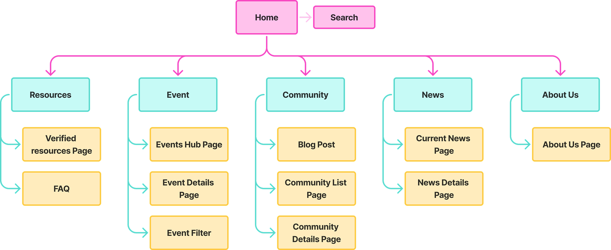

üè†
üß≠
üé®
⚖️
ü§ñ
Home
Site Map
Style Guide
Ethical Response
GenAI Acknowledgement
Website Site Map
This is the website created by card sort exercise.

In this exercise, I created a site map based on the card sort results. The goal is to create a user friendly navigation structure.
Welcome to Adine's Work Phase 3!
Links to my Work Phase Website
Work Phase 1
Work Phase 2
Work Phase 3
Work Phase 4